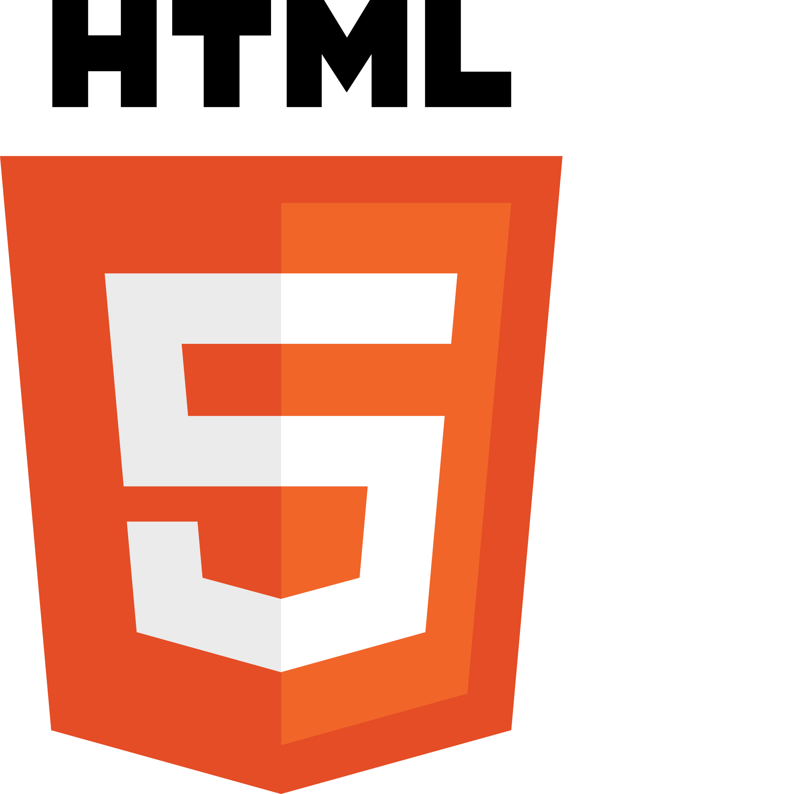

My Skill
garden.
Tools I've picked up along the way

HTML & CSS
Semantic structure, responsive layouts with Flexbox and Grid, custom animations.
Comfortable 🌸
JavaScript
Vanilla JS — DOM, ES6+, OOP with classes, async/await, API fetching.
📚 Learning this summer: React · TypeScript · Tailwind
Growing 🌱
Figma
UI design, wireframing, prototyping and component systems before writing code.
Growing 🌱
GitHub
Version control, branching, pull requests, and collaborative workflows.
Comfortable 🌸
Agile
Sprint planning, Kanban boards, iterative delivery from both industry and tech.
Comfortable 🌸
Quality Mindset
5+ years pharmaceutical QC — edge case thinking and documentation that transfers directly.
Expert ★